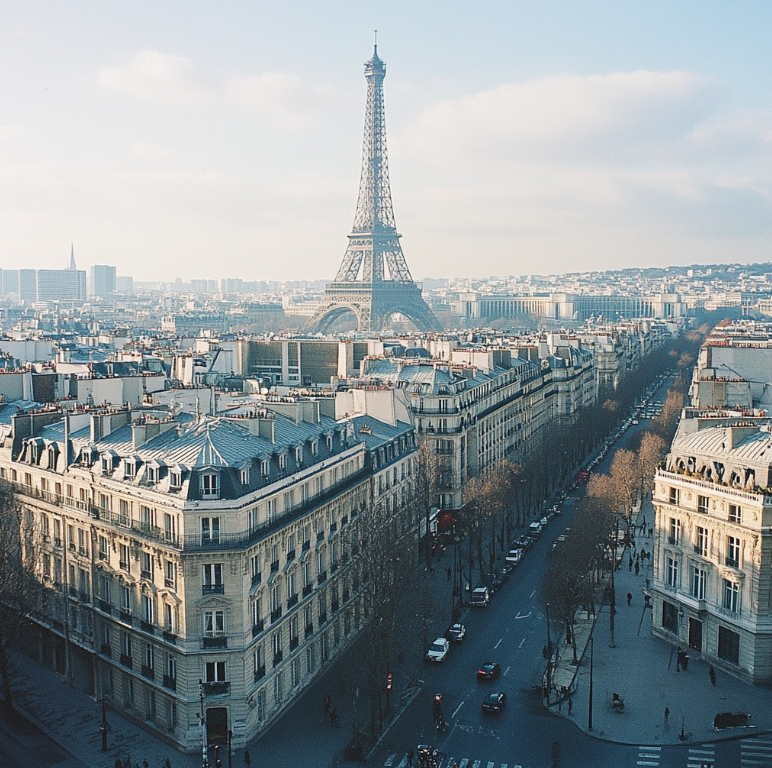

Paris - 7 Days
France, Europe
📅 7 Days | $1,200 - $1,800
View Full Itinerary
Day 1: Arrival & Montmartre
Arrive in Paris, settle into your hotel. Visit the charming Montmartre district, explore the Sacré-Cœur Basilica, and enjoy street art.
Day 2: Eiffel Tower & Seine River
Climb the Eiffel Tower for panoramic views. Take a romantic Seine river cruise in the evening and dine at a riverside restaurant.
Day 3: Louvre & Tuileries
Explore the world-famous Louvre Museum. Stroll through the Tuileries Garden and visit Notre-Dame Cathedral.
Day 4: Versailles Palace
Day trip to the magnificent Palace of Versailles. Walk through the gorgeous gardens and Hall of Mirrors.
Day 5: Arc de Triomphe & Champs-Élysées
Visit the Arc de Triomphe, walk down the famous Champs-Élysées for shopping and dining.
Day 6: Latin Quarter & Marais
Explore the vibrant Latin Quarter with cafes and bookstores. Visit the trendy Marais district with boutiques and museums.
Day 7: Leisure & Departure
Relax at a local café, do last-minute shopping, or revisit your favorite spots before departure.